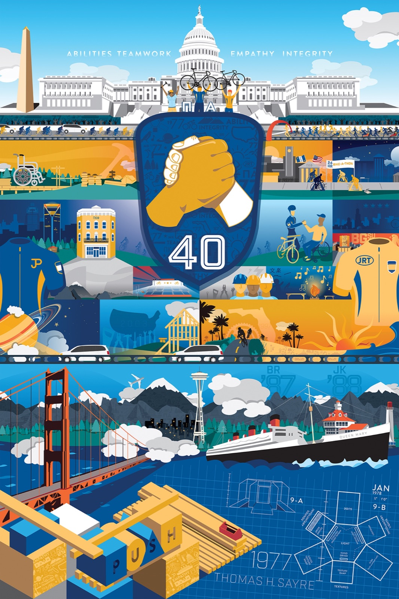
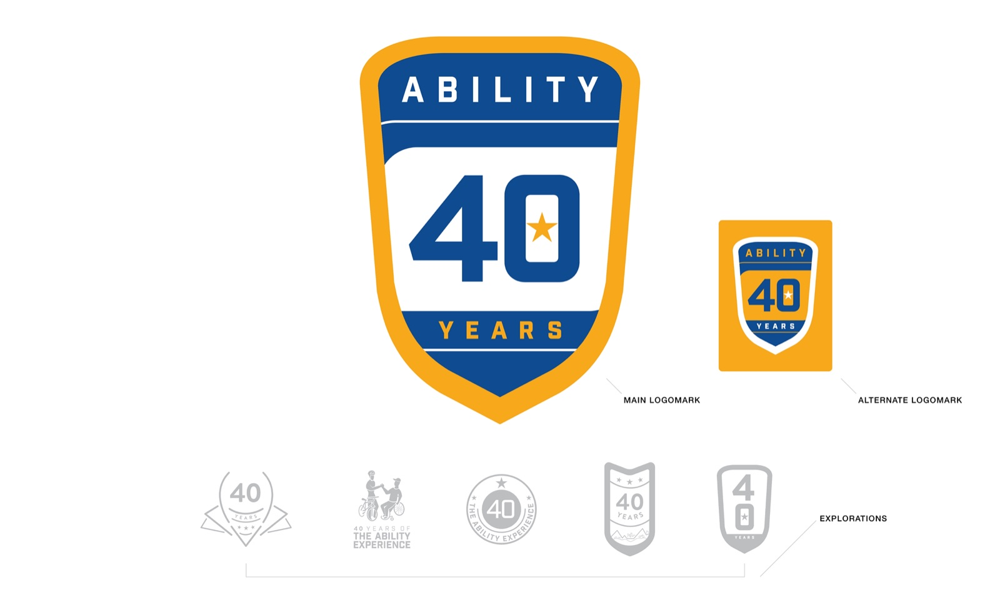
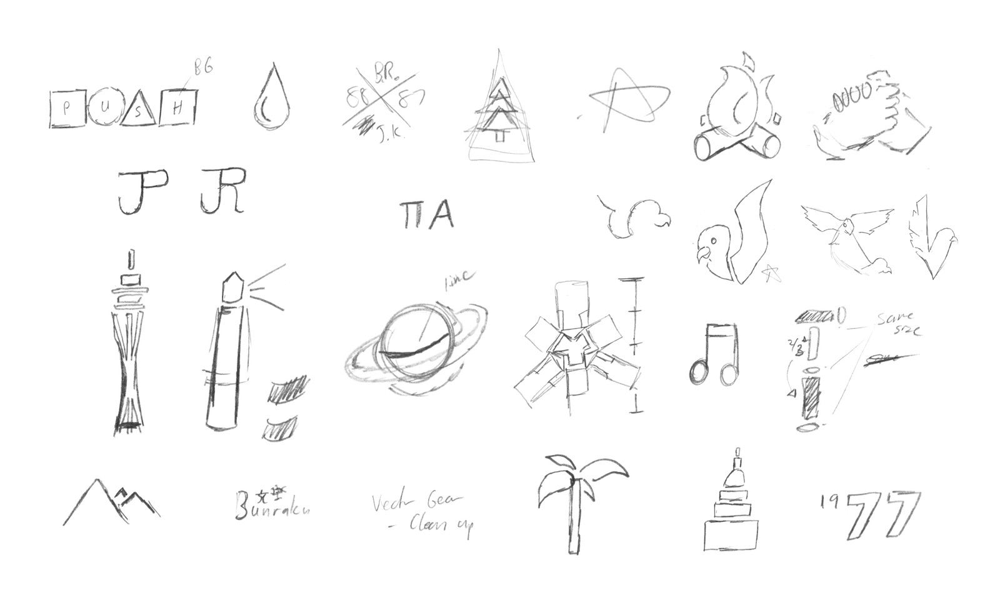
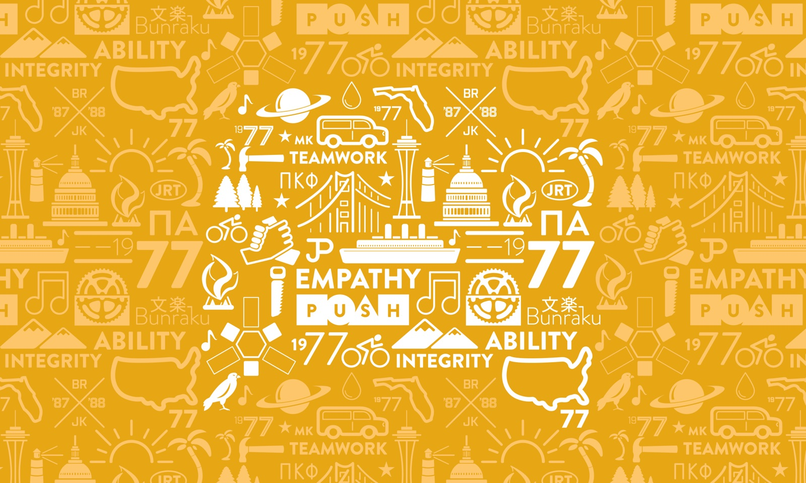
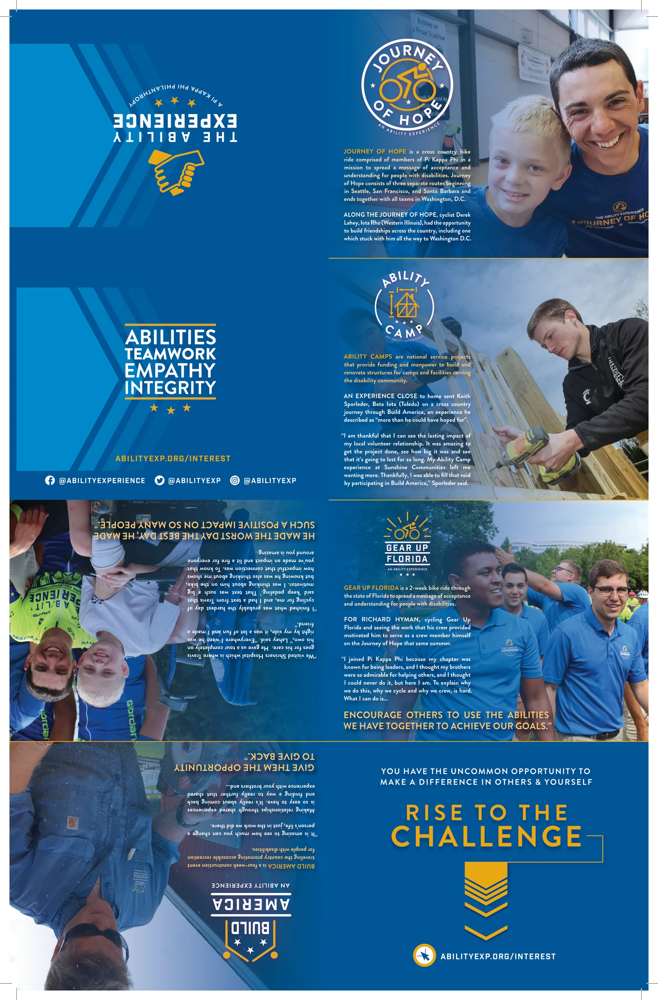
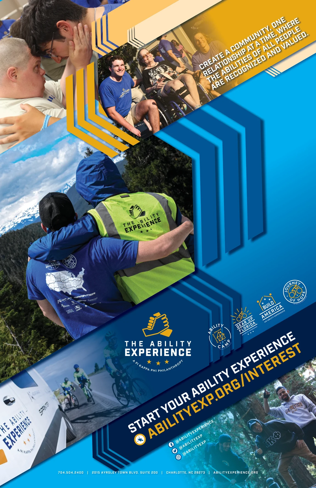
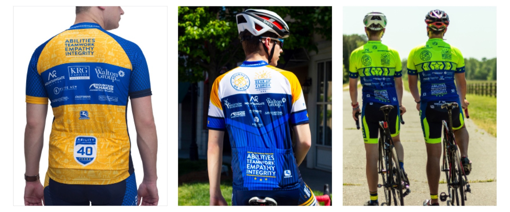
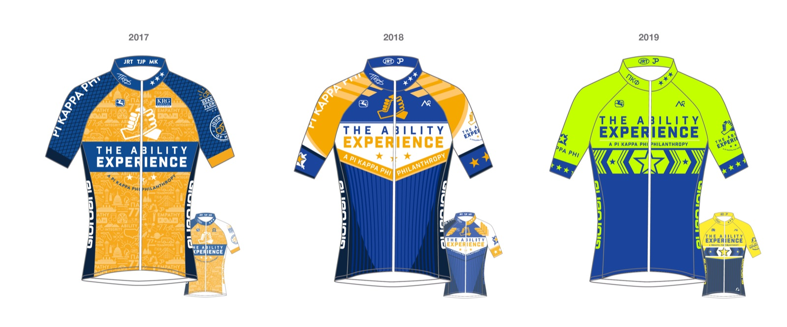
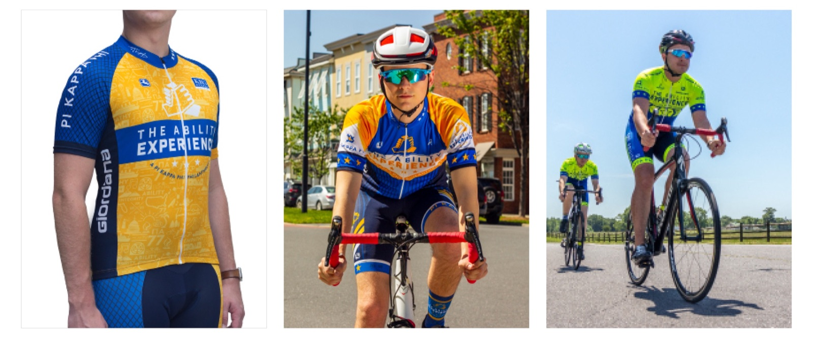
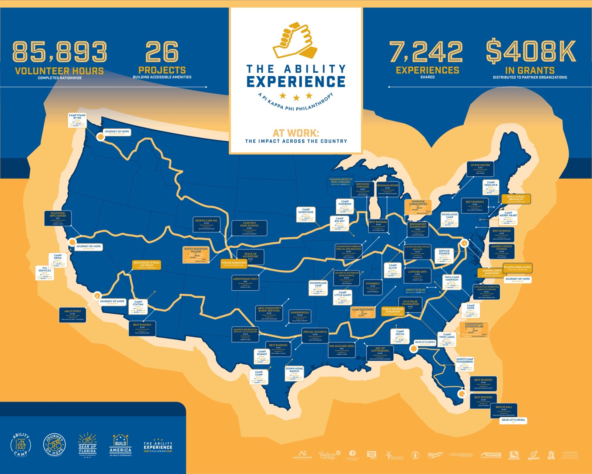

Brand Identity & Collateral
The
Ability
Experience
Empowering social change through accessible design. Brand identity and collateral for The Ability Experience.
A connected identity system carried from anniversary mark to print, iconography, and cycling kits.

01 / Anniversary moment
One moment,
one connected story.
A full brand package built around a single anniversary moment.
Source thesis
A 40th-anniversary brand package for the philanthropy that rides coast to coast every summer.
The Ability Experience is the philanthropy of Pi Kappa Phi Fraternity, connecting student members with people with disabilities through cycling events and community programs. For the organization's 40th anniversary, I built an iconography system, an illustrated commemorative print, and cycling kits worn by nearly 100 student riders traveling coast to coast.
The illustrated print shows the origins of the philanthropy and tells the story of multiple volunteer projects from across the country. Also using the iconography, the cycling kits are used by nearly 100 student cyclists as they rode from the West Coast to Washington D.C.

02 / Identity system
A family of signs,
not a single mark.
The anniversary moment became a shared visual language across identity, illustration, and event artifacts.
Artifact · Anniversary mark
A mark designed to carry the moment.
As a special tribute to the 40th anniversary of The Ability Experience, the brand package connected iconography, illustration, and cycling-kit design around one commemorative moment.



System relationship
From mark to application
The public artifacts form one connected identity story without adding operational claims or impact metrics.
Recruitment collateral · 2019
A complete print handout extended the system.
The identity moved into a two-sided recruitment piece that paired program stories, participant photography, and a clear next step.


03 / Cycling kits
The identity
in motion.
Each summer kit sets the branding standard for The Ability Experience's team events.
Applied identity
Setting the visual standard for the ride.
For each new year of team summer events, The Ability Experience designs a cycling kit that sets a branding standard for the summer of team events. Incorporating safety feature standards, these cycling kits are used during The Ability Experience summer team events Gear Up Florida and the Journey of Hope.



